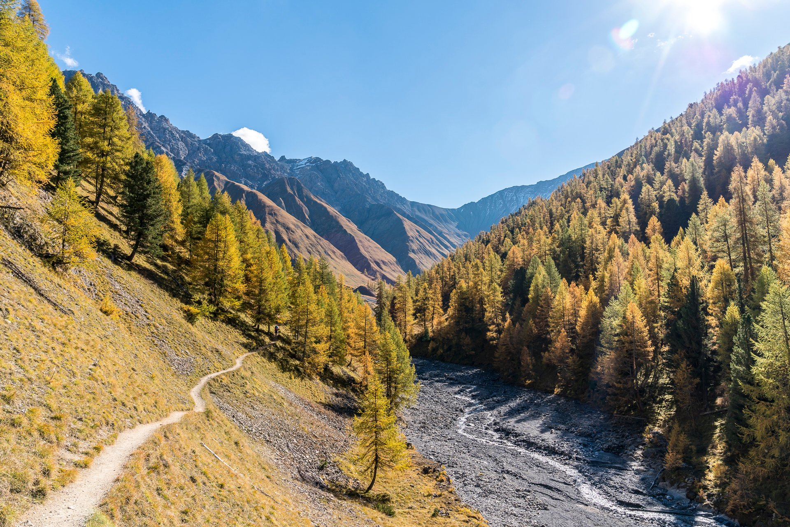
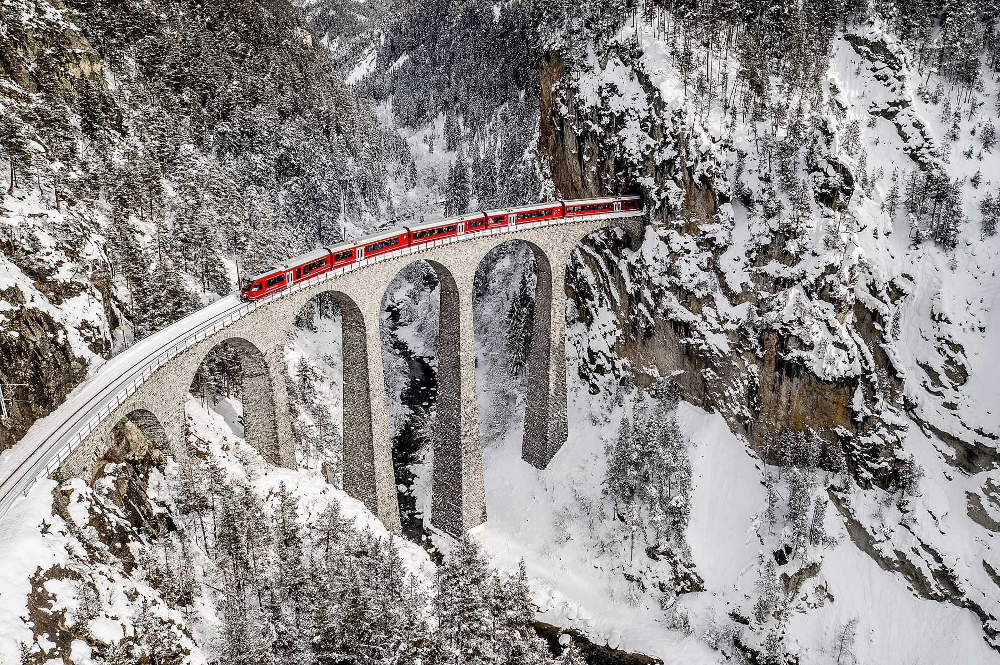

Sehenswürdigkeiten und Aktivitäten im Graubünden
Auf dieser Webseite finden Sie schöne Sehenswürdigkeiten und Aktivitäten in Graubünden, die Sie unbedingt ansehen sollten.
Express Parc NaziunelDas "Gelbe Zügli" ist eine kleine Bergbahn, die über Zuoz und S-chanf nach Varusch fährt, von wo aus man ins Val Trupchun wandern kann.

Nationalparc Val Trupchun
Ein idyllischer Nationalpark am Rande der Alpen, wo man Bartgeier, Gämsen, Hirsche und vieles mehr entdecken kann. Schöne Aussicht und Ruhe ist auch im Paket.
Schloss und Dorf Tarasp
Das schöne Schloss Tarasp ist eines der ältesten noch bewohnten Schlösser. An der Grenze zwischen Scuol und Tarasp liegt das hübsche Schlösschen auf einem Hügel.

Brusio, das Dorf vom Kreisviadukt
Einer der schönsten Viadukte ist wohl der Kreisviadukt von Brusio. Über 100 Jahre alt und immer noch schön und geschmeidig.

Das Berühmte Landwasserviadukt
Einer der spektakulärsten, atemberaubendsten und meiner Meinung nach schönsten Viadukte ist wohl der Landwasserviadukt in der Nähe von Filisur. Es ist über 124 Jahre alt und damit etwas älter als das Kreisviadukt in Brusio.
Seit wann gibt es den Express Parc Natiunel?
Seit 2014

Wann wurde der Nationalpark gegründet?
Seit dem 1. August 1914

Wann wurde das Schloss Tarasp gebaut?
1040 gebaut

Wie alt ist das Kreisviadukt bei Brusio?
Angefangen am 25. März 1907 und fertiggestellt im Juli 1908

Wie alt ist das berühmte Landwasserviadukt?
Angefangen März 1901